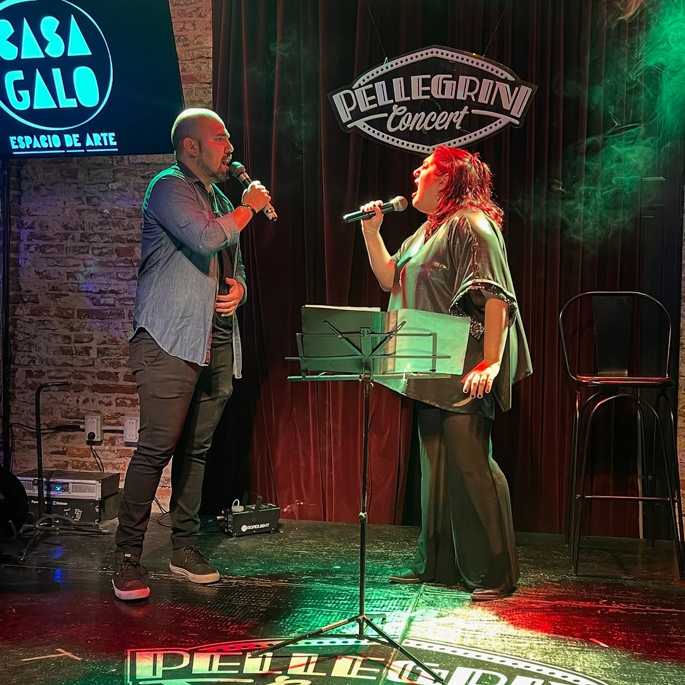
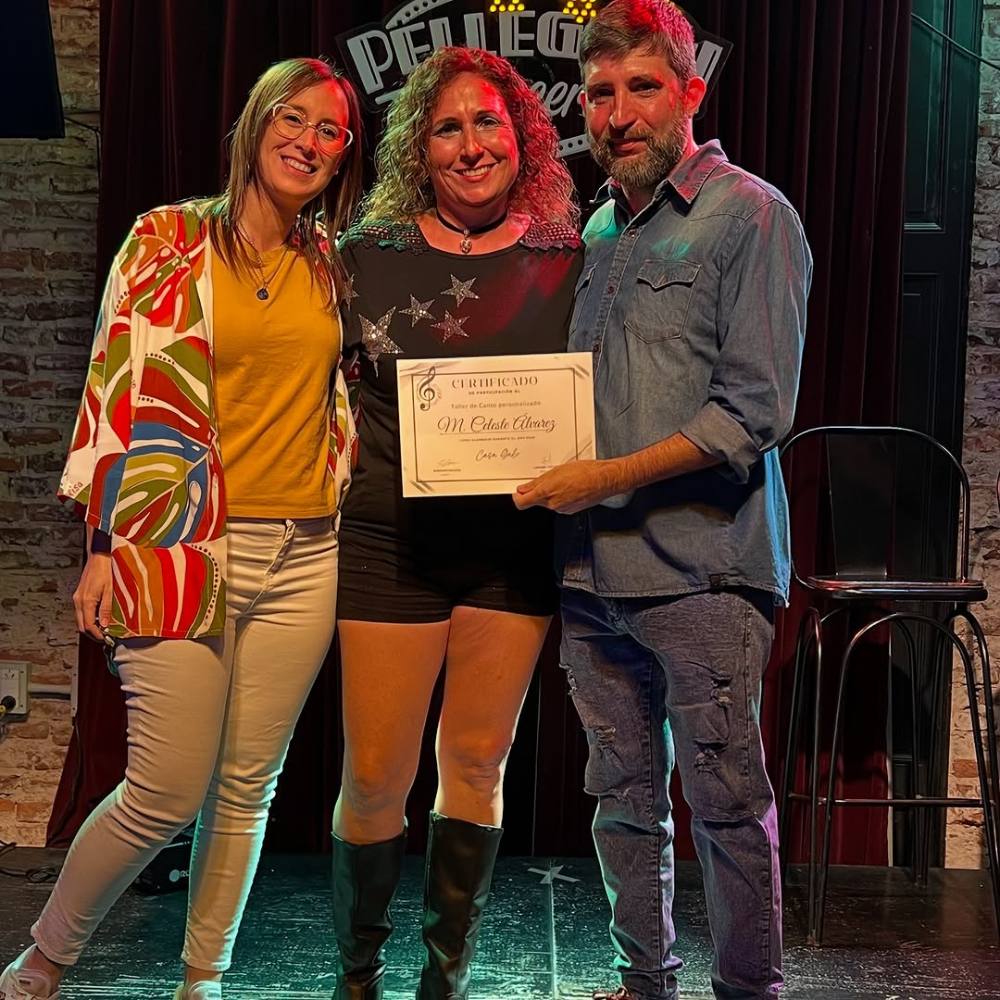
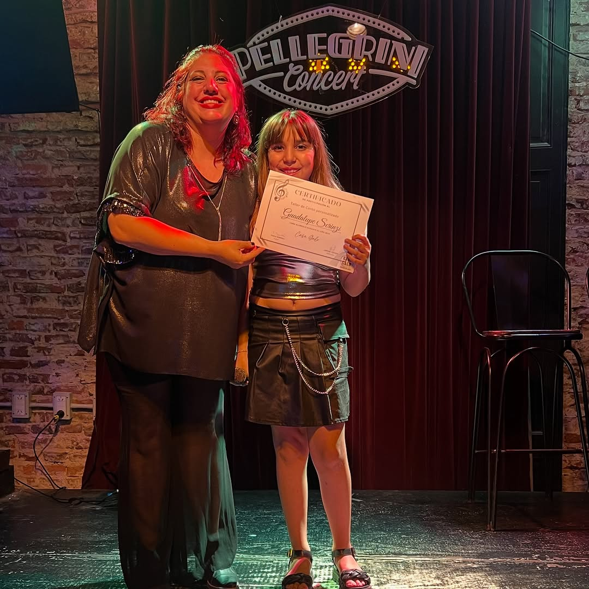
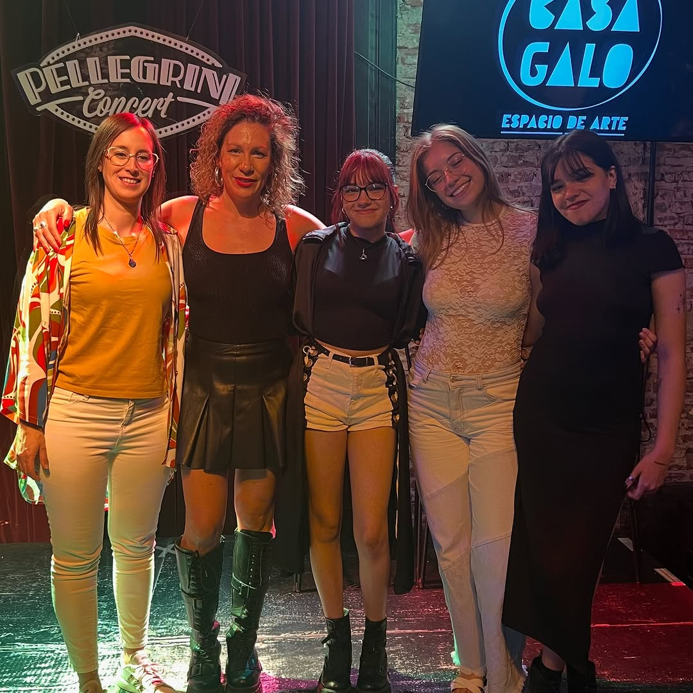
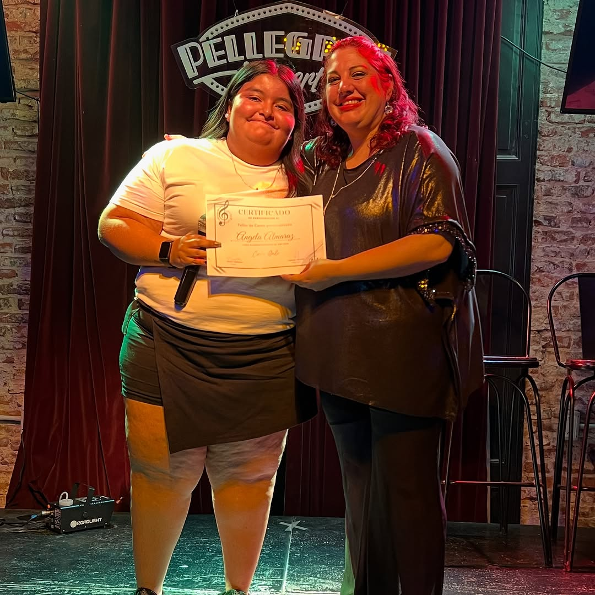
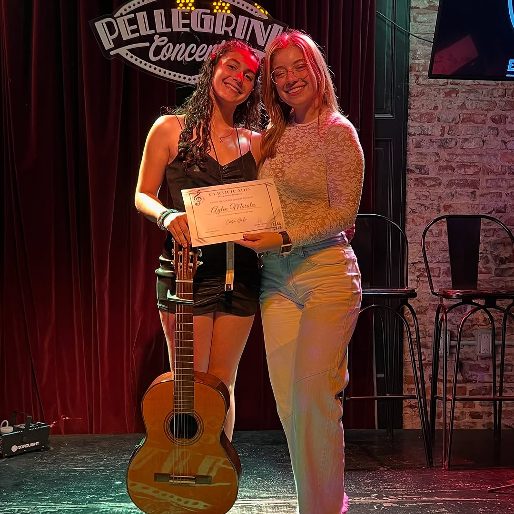

Nuestras Fotos
Explorá nuestras clases, catas, eventos y más.






×

Inspiración, creatividad y formación artística en un solo lugar.
Más informaciónCasa Galo nació en 2017 como el sueño de su fundadora, Lorena Yacuzzi, quien decidió crear un espacio de formación y expresión artística. Lo que comenzó con clases de técnica vocal pronto se transformó en un proyecto con identidad propia.
En 2018 se inició en San Lorenzo con talleres grupales de canto. Con el tiempo, incorporamos guitarra, piano, teatro y comedia musical. Hoy, Casa Galo se ha consolidado como un instituto privado de arte, combinando enseñanza, creatividad y comunidad.
Profesora de Canto. Combina técnica y emoción para potenciar la voz de cada estudiante.
Profesora de Piano. Transmite técnica, práctica e interpretación musical con experiencia en vivo.
Profesor de Guitarra. Enseña distintos estilos y fomenta la expresión a través del instrumento.
Fundadora. Fomenta creatividad, profesionalidad, confianza y emoción en sus estudiantes y profesores.
Explorá nuestras clases, catas, eventos y más.
Podés escribirnos o visitarnos según tu preferencia.
WhatsApp: +54 9 3476644833
Instagram: @casagalosl
Email: info@casagalo.com
Ubicación: Ver en Google Maps
Horario de atención: Lun a Vie 09:00-22:00